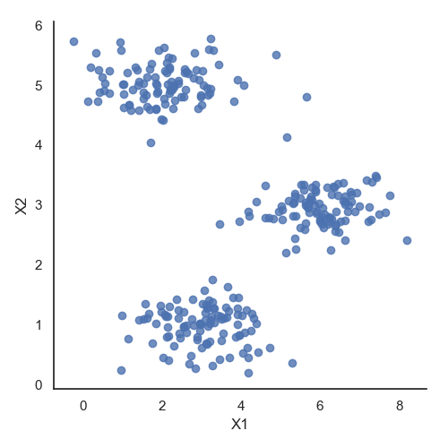
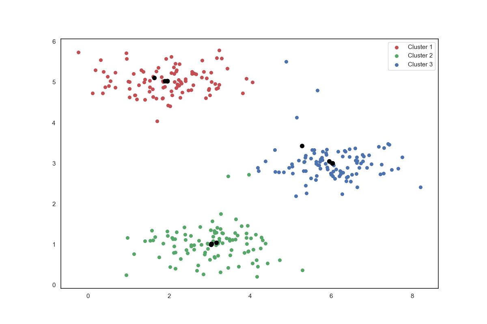
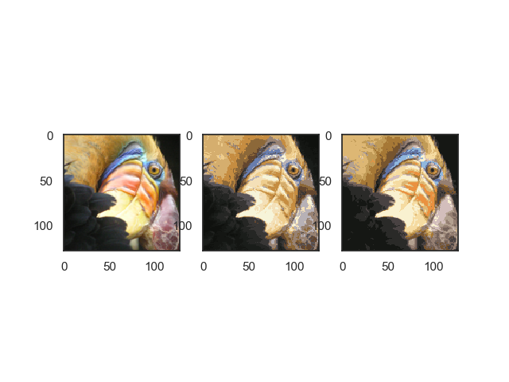
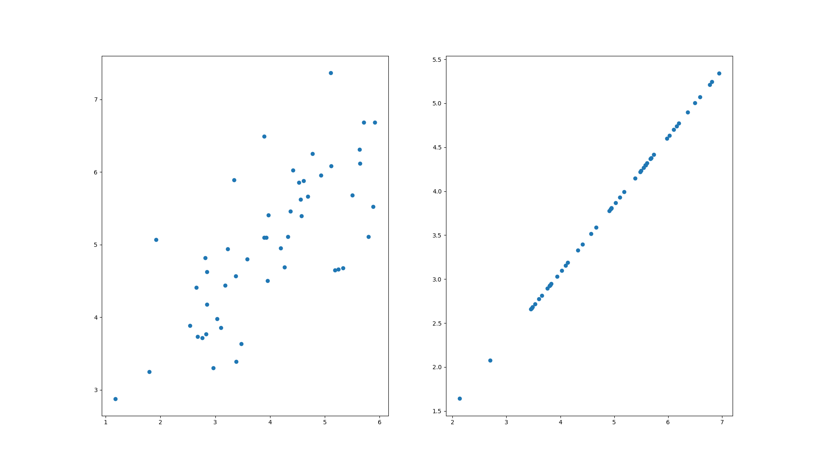
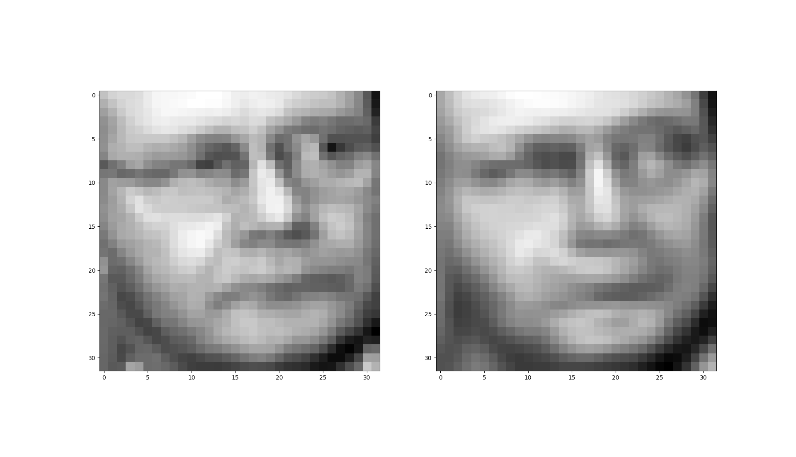

AndrewNg 机器学习习题ex7-k means and PCA
在本练习中，我们将实现K-means聚类，并使用它来压缩图像。 我们将从一个简单的2D数据集开始，以了解K-means是如何工作的，然后我们将其应用于图像压缩。 我们还将对主成分分析进行实验，并了解如何使用它来找到面部图像的低维表示。
Implementing K-means
我们将实施和应用K-means到一个简单的二维数据集，以获得一些直观的工作原理。 K-means是一个迭代的，无监督的聚类算法，将类似的实例组合成簇。 该算法通过猜测每个簇的初始聚类中心开始，然后重复将实例分配给最近的簇，并重新计算该簇的聚类中心。 我们要实现的第一部分是找到数据中每个实例最接近的聚类中心的函数。
可视化数据
1 | #!/usr/bin/python |

Finding closest centroids
$c^{(i)} := j\ that\ minimizes\ ||x^i - u_j||^2 $
计算每一个特征值到所选取的聚类中心的距离，纪录最短距离的聚类中心编号。
1 | def find_closest_centroids(X, centroids): |
[0. 2. 1.]
输出与文本中的预期值匹配（记住我们的数组是从零开始索引的，而不是从一开始索引的，所以值比练习中的值低一个）。
Computing centroid means
接下来，我们需要一个函数来计算簇的聚类中心。 聚类中心只是当前分配给簇的所有样本的平均值。1
2
3
4
5
6
7
8
9
10
11
12def compute_centroids(X, idx, k):
m, n = X.shape
centroids = np.zeros((k, n))
for i in range(k):
indices = np.where(idx == i)
centroids[i, :] = (np.sum(X[indices, :], axis=1) / len(indices[0])).ravel()
return centroids
print(compute_centroids(X, idx, 3))
[[2.42830111 3.15792418]
[5.81350331 2.63365645]
[7.11938687 3.6166844 ]]
此输出也符合练习中的预期值。 下一部分涉及实际运行该算法的一些迭代次数和可视化结果。 这个步骤是由于并不复杂，我将从头开始构建它。 为了运行算法，我们只需要在将样本分配给最近的簇并重新计算簇的聚类中心。
K-means on example dataset
1 | centroids_trace = np.empty(shape=[0, 2]) |

Image compression with K-means
我们的下一个任务是将K-means应用于图像压缩。 从下面的演示可以看到，我们可以使用聚类来找到最具代表性的少数颜色，并使用聚类分配将原始的24位颜色映射到较低维的颜色空间。
下面是我们要压缩的图像。
1 | image_data = loadmat('data/bird_small.mat') |
用scikit-learn来实现K-means1
2
3
4
5
6
7
8
9
10
11
12
13
14
15
16
17from sklearn.cluster import KMeans # 导入kmeans库
model = KMeans(n_clusters=16, n_init=100, n_jobs=1)
model.fit(X)
centroids = model.cluster_centers_
print(centroids.shape)
C = model.predict(X)
print(C.shape)
print(centroids[C].shape)
compressed_pic = centroids[C].reshape((128, 128, 3))
fig, ax = plt.subplots(1, 3)
ax[0].imshow(A)
ax[1].imshow(X_recovered)
ax[2].imshow(compressed_pic)
plt.show()

通过K-means算法，我们让图像以更少的色彩来显示实现压缩，但是图像的主要特征仍然存在。
Principal component analysis（主成分分析）
PCA是在数据集中找到“主成分”或最大方差方向的线性变换。 它可以用于降维。 在本练习中，我们首先负责实现PCA并将其应用于一个简单的二维数据集，以了解它是如何工作的。 我们从加载和可视化数据集开始。
1 | data = loadmat('data/ex7data1.mat') |

请注意，第一主成分的投影轴基本上是数据集中的对角线。 当我们将数据减少到一个维度时，我们失去了该对角线周围的变化，所以在我们的再现中，一切都沿着该对角线。
我们在此练习中的最后一个任务是将PCA应用于脸部图像。 通过使用相同的降维技术，我们可以使用比原始图像少得多的数据来捕获图像的“本质”
1 | def plot_n_image(X, n): |

我们把1024个特征缩减到100个时还保留了94%的差异值。